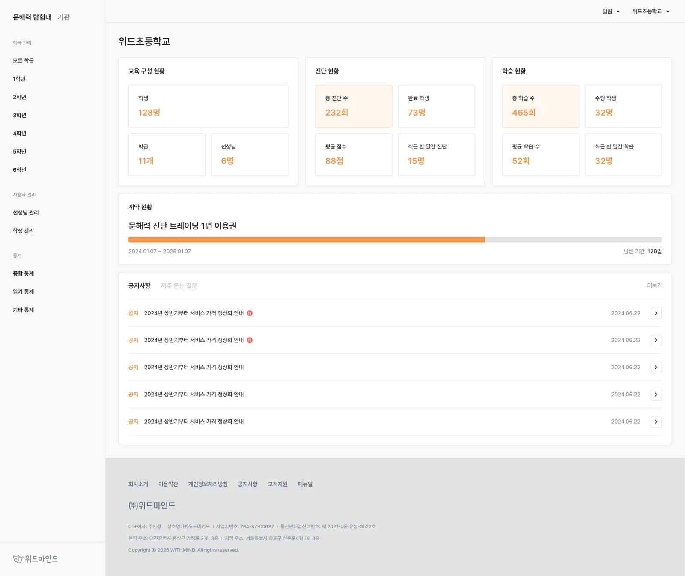
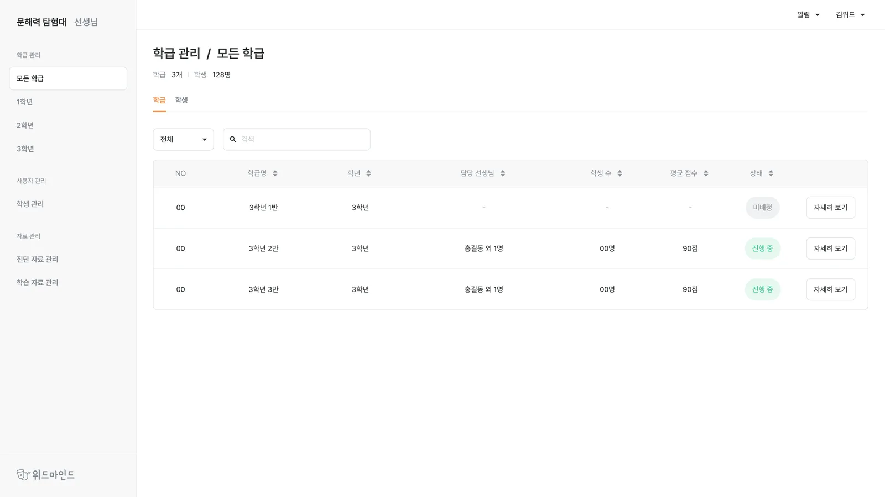
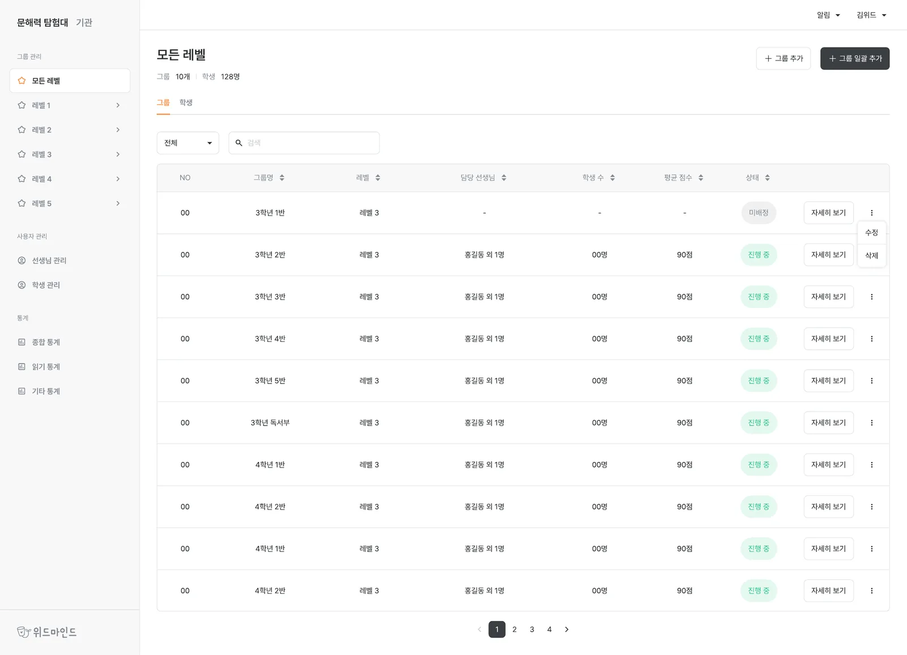
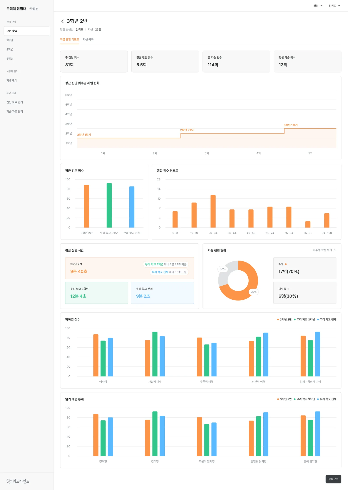
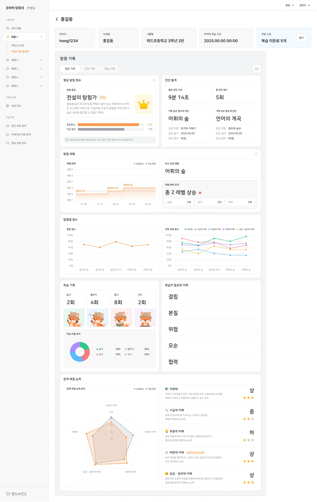
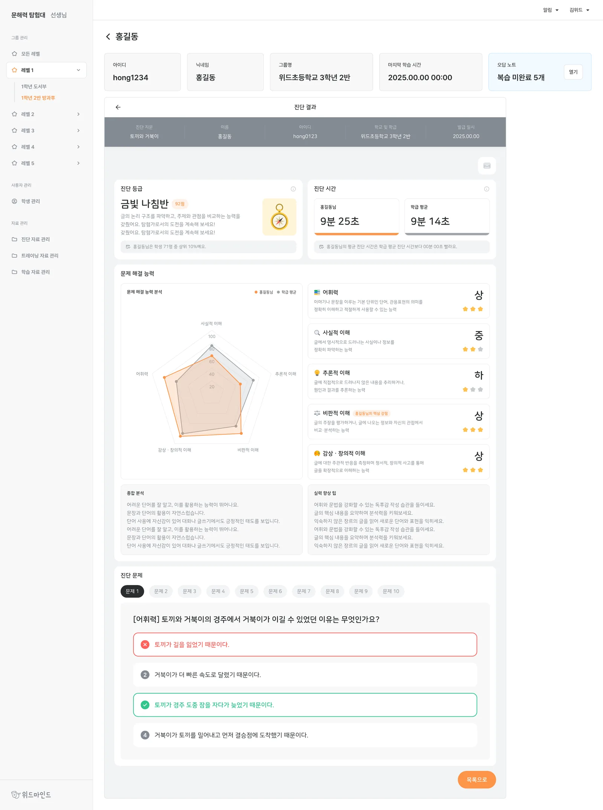
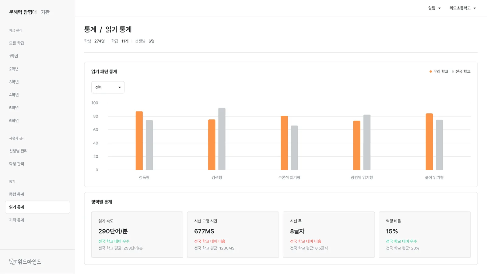
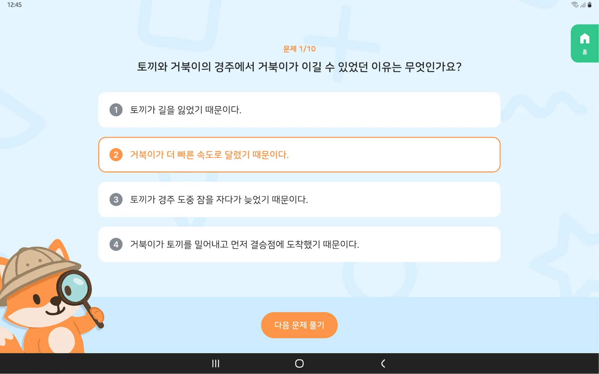
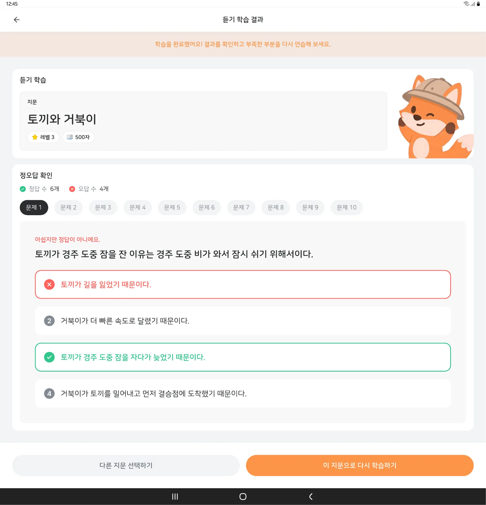

선생님 문해력 탐험대
학생의 문해력을 AI로 진단하고 맞춤 학습으로 이어 주는 교육 서비스입니다. 그중 선생님과 기관이 쓰는 관리자 사이트를 맡았습니다.

프로젝트 소개
읽기는 모든 학습의 출발점이지만 교실에서는 학생마다 읽기 습관과 수준을 파악하기 어렵습니다. 그래서 교과서 지문과 시선 추적으로 읽는 방식까지 재고, 어휘력·사실적·추론적·비판적·감상적 이해 다섯 유형으로 진단합니다. 드러난 약점은 맞춤 문제로 이어집니다.
학생용 화면과 선생님·기관용 관리자 화면이 따로 있고, 저는 선생님·기관 관리자 사이트를 맡았습니다. 진단이 정확해도 교사가 결과를 읽고 다음 수업에 쓰지 못하면 소용이 없어서, 데이터를 어떤 단위로 묶어 보여줄지가 이 화면의 전부였습니다.
권한이 둘로 갈리는 화면
같은 관리자 사이트를 기관 관리자와 선생님이 함께 씁니다. 기관 관리자는 기관 전체를, 선생님은 본인 그룹만 봅니다. 메뉴가 아예 없는 경우와 범위만 좁아지는 경우를 어떻게 보여줄지가 첫 문제였습니다.
| 기능 | 기관 관리자 | 선생님 |
|---|---|---|
| 그룹 · 선생 관리 | 전체 그룹 · 학생 · 선생님 | 본인 그룹 · 학생만 |
| 진단 · 학습 자료 관리 | 진단 자료 및 학습 자료 설정 | 본인 그룹 자료만 |
| 결과 열람 리포트 | 모든 그룹 | 본인 그룹만 |
| 통계 | 전체 기관 통계 | 없음 |
| 계정 · 이용권 관리 | 기관 단위 관리 | 없음 |
쓸 수 없는 기능을 회색으로 남겨 두면 그것부터 눈에 걸립니다. 선생님 계정에서는 통계와 계정 관리를 메뉴에서 빼고, 범위만 좁아지는 화면은 같은 컴포넌트에 조회 범위를 적어 뒀습니다.

등록과 배정
학기 초에는 계정을 한꺼번에 만들어야 해서, 개별 등록과 엑셀 일괄 등록을 함께 뒀습니다.
일괄 등록에서는 실패하는 행이 꼭 생깁니다. 파일을 다시 열어 대조하지 않도록 결과를 행 단위로 돌려주고 고칠 곳을 화면에서 짚어 줍니다. 등록한 계정은 그룹·학급에 배정하고, 수정과 정지도 같은 화면에서 합니다.

진단 리포트
리포트는 그룹 · 학생 · 개별 진단 세 단위입니다. 선생님이 보는 순서가 그렇기 때문입니다. 우리 반이 어디쯤인지 보고, 눈에 걸리는 학생을 찾고, 그 학생이 어느 문항에서 틀렸는지까지 내려갑니다.
그래서 세 화면을 하나의 흐름으로 이었고, 한 단계 내려가도 앞에서 보던 기준이 따라옵니다. 정답률과 성취 수준은 표와 그래프를 함께 두어 수치를 읽기 전에 형태로 먼저 보이게 했습니다.



통계와 자료 관리
기관 관리자는 학교·학년·학급 단위로 데이터를 봅니다. 기간과 단위를 바꿔 가며 보다 보면 무엇을 보고 있는지 놓치기 쉬워서, 적용된 기준을 화면 위에 남겨 뒀습니다.

관리자 사이트와 함께, 이미 운영 중이던 학생용 화면 일부도 고쳤습니다.


사용 기술
관리자 사이트 전반의 화면을 만들었습니다. 등록·수정·삭제·업로드처럼 결과가 갈리는 작업이 많아, 정상·오류·확인 상태를 화면에 어떻게 남길지 정하는 일이 컸습니다.
돌아보며
진단이 정확한 것과 교사가 그 결과를 쓸 수 있는 것은 다른 문제입니다. 이 프로젝트에서 한 일은 대부분 데이터를 어떤 단위로 묶고 어떤 순서로 내려가게 할지 정하는 일이었습니다.